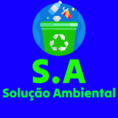

|  | |
|  |
Coleta seletiva
Confira em um só lugar informações relacionadas a coleta seletiva
|
| Redes Sociais | |
|
Os links fornecidos são para as contas oficiais da Prefeitura de Rondonópolis e do Sanear (Serviço de Saneamento Ambiental de Rondonópolis) no Instagram. Essas contas são ferramentas valiosas para a comunicação e o envolvimento da comunidade em questões relacionadas à coleta seletiva e à gestão de resíduos na cidade.
|
|